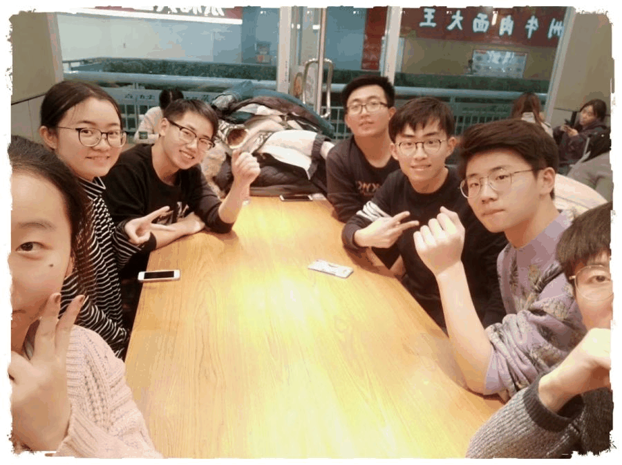
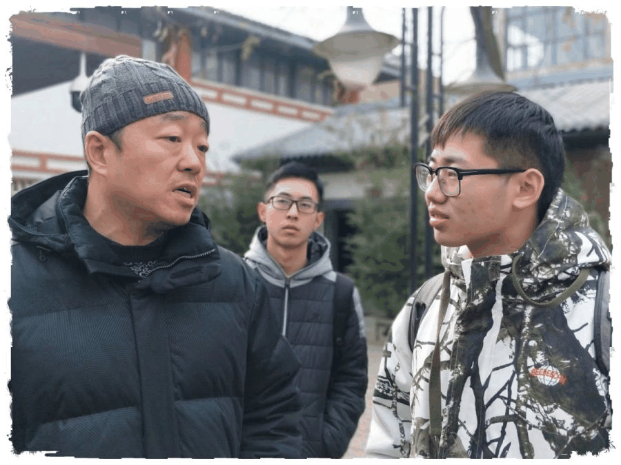
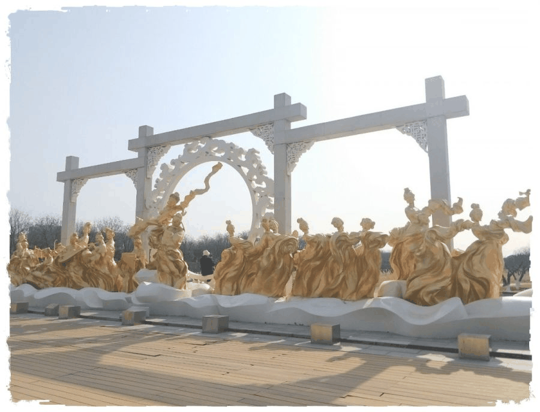

【秦简拓语 · 五】行在西安
行者无疆今韶忆长安
吾乃行无疆者也
——采访组 沈柏宇

每次到了寒暑假的行者之旅，我都会感叹中国文化之博大精深而自己阅历之少；而每次到了写后期文字活动的时候，常常会感叹自己书本阅历少，很难像文字组的行者们那样，用充满韵味而不失真的语言表达出来我对我正所遇见的文化的热爱，表达出我心中那份行者情。

距西安之行结束有11天了，同上次的皖徽之行一般。在从西安回家的路上，我会对着窗外，或是看着一幅幅合照，亦或是看着推送，思考着此行究竟让作为行者的我想到了什么，明白了什么。在上一期中我曾说过：“拾遗皖徽唤起了我对文化的热忱，激励了我朝着‘传文化之美，承行者之路’的方向去完成文化调研。”
这一期，从面试挑选队友的那个大学纷飞的夜里，到之后的校园采访以及在西安的7天中，我想我延续了上一期的热情，也一直保持着初心，努力去走好行者之路。

这一期我们的调研主题是“文物遗址的发展及保护现状”，选在西安，自是因为它作为十三朝古都，拥有着72座陵墓，以周、秦、汉、唐等较重要的朝代为主，将大明宫、阿房宫、钟鼓楼、乾陵、秦始皇陵等许多重要的文化遗址保护了下来并进行发掘开发和建设，也就是西安独天得厚的地理位置和浓厚的历史底蕴的条件，让我们对这个地方充满了向往。
来到西安后，我个人触动极深，因为我的眼睛让我相信，西安确实是一个非常独特的城市，也许在到来之前我们都曾多多少少了解过汉代或唐代的资料，即它的建筑风格、衣着打扮等，但当我们真正踏在这片黄土之上，领略着一个个奇迹遗产，聆听着遗址的曾经、现在和未来打算时，那种真实的历史气息是确切摆在面前的，仿佛能触碰到，能感受到先辈曾在这个地方的生活状况。


对于文物遗址的发展及保护，西安可谓是国内的先驱者，当然我认为这也是它们必须要做好的。以大明宫国家遗址公园为例，大明宫作为唐代重要的政治中心，可谓代表了当时朝代的发展。在进行考古发掘时，对于大明宫中的丹凤门、含元殿、太液池等部分，考古专家都进行了十分细致的分析讨论，因为文物遗址的发展受到许多因素的影响，是否会破坏遗址及如何减小遗址的损坏，以及遗址周边居民安置等问题都显得十分棘手。
在各层努力之下，大明宫国家遗址公园保留下了绝大部分的建筑，更是建立了博物馆和按比例缩小的模型图，将大明宫的兴建过程和之后的状况结合着现代化的设备表现了出来，这样不仅让所到之人了解了大明宫，也大大减少了对遗址的破坏。

古人云：“夫以铜为镜，可以正衣冠，以史为镜，可以知兴替，以人为镜，可以明得失。”文物遗址的开发展示，不仅仅是将曾经的面貌展现出来让后人有机会了解到遗址所对应的朝代的兴衰，更是让国家同民众通过历史上的政治、人物、典故来更好的发展自身。
行者无疆
思者无域
吾乃行无疆者
感谢相遇，感谢努力
期待下一次相遇
来源丨行者无疆实践团
文字丨沈柏宇
排版丨邓子孚
审核丨潘雯雯 邓子孚
行者无疆实践团
QQ：2758025831

随行者一起认识世界
长按二维码关注